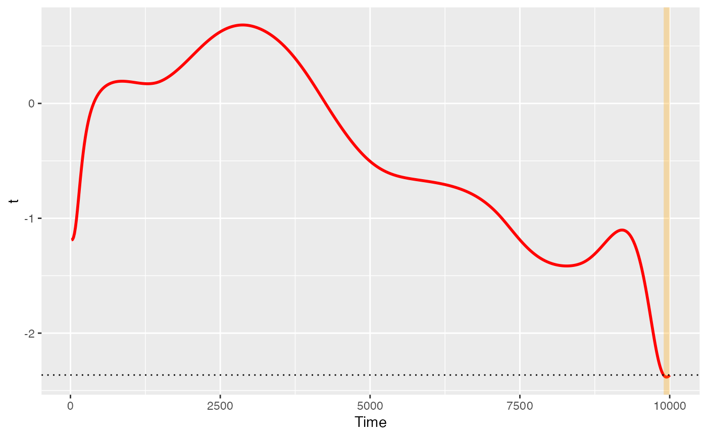

The plot functions are designed to run with just data and pupil selections, with some additional options for fun with plotting. To see these plots, you must first use one of the run_functional tests.
# S3 method for Pupil_test_data
plot(x, show_divergence = TRUE, colour = "black", fill = "grey", ...)A Pupil_test_data dataframe
logical indicating whether divergences are to be highlighted
string indicating colour of geom_line, passed to ggplot2
string indicating fill hue of divergence highlights, passed to ggplot2
Ignored
A ggplot object
Sdata <- make_pupillometryr_data(data = pupil_data,
subject = ID,
trial = Trial,
time = Time,
condition = Type)
regressed_data <- regress_data(data = Sdata, pupil1 = RPupil, pupil2 = LPupil)
mean_data <- calculate_mean_pupil_size(data = regressed_data,
pupil1 = RPupil, pupil2 = LPupil)
base_data <- baseline_data(data = mean_data, pupil = mean_pupil, start = 0, stop = 100)
#> Baselining for each subject and trial. If this is not the intended behaviour you may wish to do this manually.
differences <- create_difference_data(data = base_data,
pupil = mean_pupil)
#> Hard minus Easy -- relevel condition if this is not the intended outcome
spline_data <- create_functional_data(data = differences, pupil = mean_pupil, basis = 10, order = 4)
ft_data <- run_functional_t_test(data = spline_data,
pupil = mean_pupil)
#> critical value for n = 8 is 2.36462425159278
p <- plot(ft_data, show_divergence = TRUE, colour = 'red', fill = 'orange')
p
